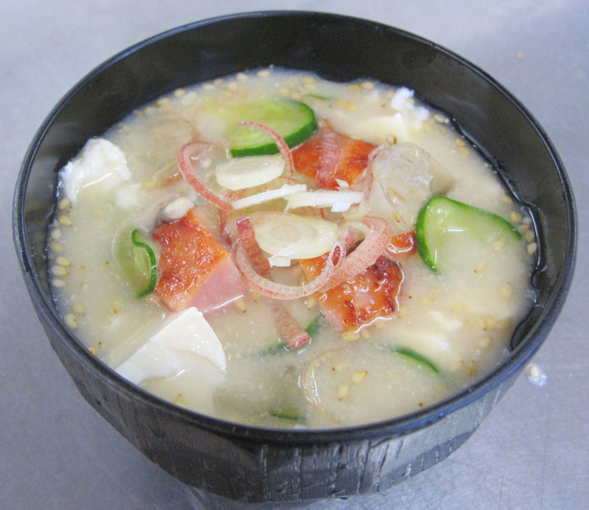

焼豚入り冷や汁

材料（2人分）
- 焼豚 ... 適量
- きゅうり ... 1本
- 絹ごし豆腐 ... 1/2丁
- みょうが... 1本
- すりごま... 大さじ2
- ほんだし ... 小さじ1
- 味噌 ... 大さじ2
- 水 ... 2カップ
作り方（調理時間:5分/目安）
- すりごま、ほんだし、味噌をよく練り合わせ、水で少しずつのばしていく。
- 焼豚はサイコロ状に切り、きゅうりは薄切り、みょうがは輪切りにする。
- 器に①②を入れ、豆腐を手でちぎって入れたらできあがり。
※氷を浮かべるとより冷たくいただけます！
提供
伊藤ハム米久ホールディングス（株）